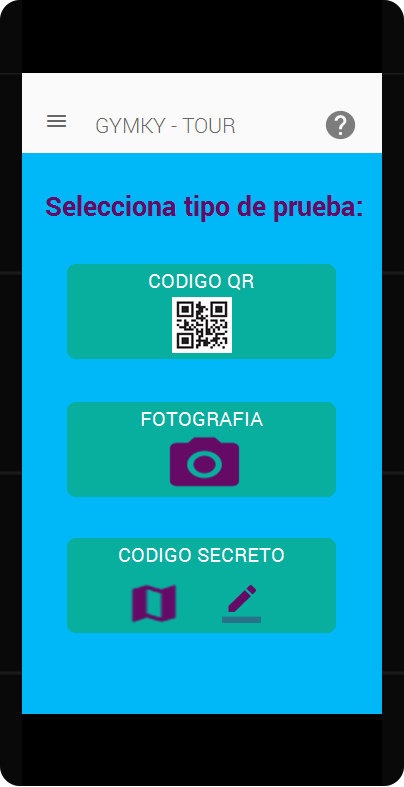
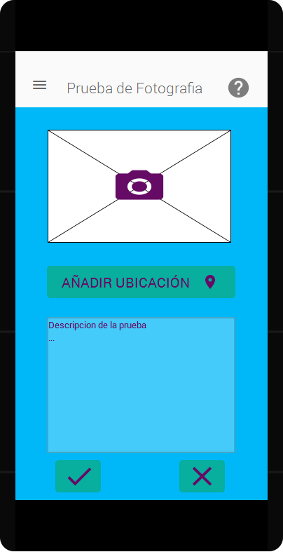
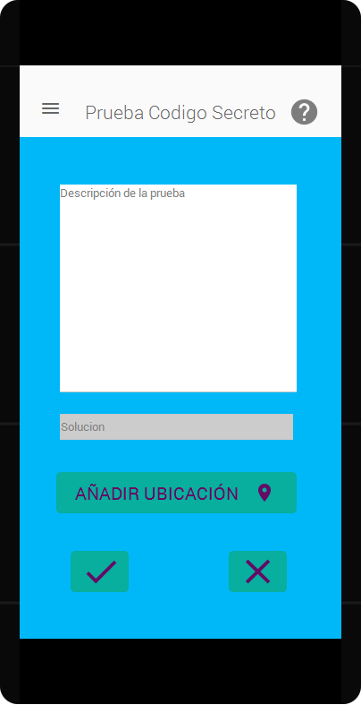
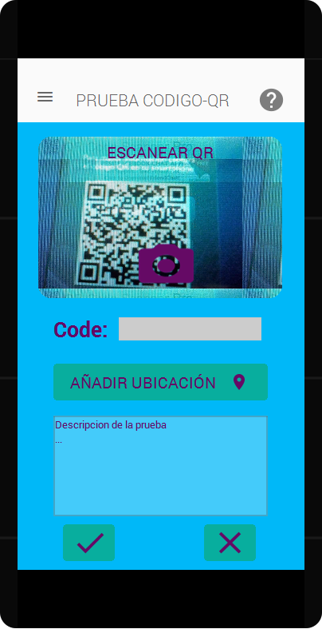

Es una aplicación móvil que se basa en la idea de un juego de una Gymkana basado en GPS y orientado al turismo, con ella visitaremos diversos lugares de interés; entre ellos monumentos, tiendas, plazas, parques, etc. También los dueños de los negocios podrán decidir incorporar a su negocio una prueba, ayudando a financiar el proyecto y ganando afluencia a su comercio.
¡También puedes añadir pruebas!
   